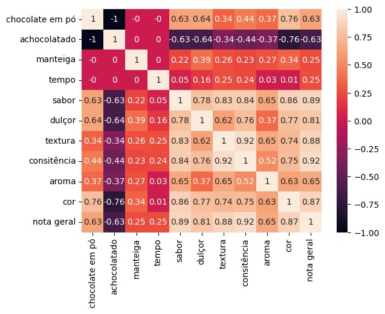

Sobre o projeto
Em nossa casa, acreditamos que a felicidade pode
ser encontrada em cada mordida de um brigadeiro
perfeitamente preparado. No coração de nossa cozinha,
combinamos os ingredientes mais finos e a paixão pela
culinária para criar uma experiência única e inesquecível.
Correlação entre as variáveis utilizadas
Utilizamos como variáveis em nosso projeto,
o chocolate em pó, o achocolatado, a manteiga,
o tempo de cozimento como parâmetros de entrada,
e as variáveis sabor, dulçor, textura, consistência,
aroma, cor e nota geral como possíveis resultados
do modelo, onde o usuário pode selecionar qual deseja predizer.
Utilizamos da matriz de correlação para
descobrir quais variáveis se correlacionam
mais, isso é medido através do coeficiente de
correlação de Pearson, no qual seu valor pode
variar entre -1 e 1. Ao lado podemos observar
o mapa de calor da matriz de correlação do
nosso modelo.
